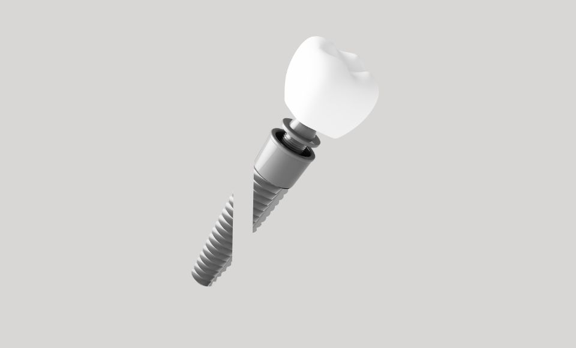

- Montag bis Samstag 9:00 bis 19:00 Uhr

Zahnimplantate entfernen: Was Sie wissen sollten
Zahnimplantate sind aufgrund ihrer fortschrittlichen Technologie und ihrer ästhetischen sowie funktionalen Vorteile nach wie vor eine beliebte Wahl für Zahnersatz. Der langfristige Erfolg von Implantaten hängt maßgeblich davon ab, wie gut sie sich in das umgebende Gewebe integrieren. In einigen Fällen kann jedoch eine Entfernung des Implantats notwendig werden. Weniger als drei Prozent aller Zahnimplantate müssen innerhalb von fünf Jahren ersetzt oder entfernt werden. Mögliche Gründe dafür sind Schäden am Kieferknochen, schwere Unfälle, unzureichende Mundhygiene oder Zahnfleischerkrankungen.
Können Zahnimplantate entfernt werden?
Ja, Zahnimplantate können entfernt werden. Dieser Eingriff kann jedoch invasiv sein und erfordert je nach Zustand des Knochens und des umliegenden Gewebes zusätzliche chirurgische Maßnahmen. Die Knochenstruktur sowie das Gewebe um das Implantat müssen dabei sorgfältig berücksichtigt werden.
Akdeniz Dental in Antalya bietet umfassende Beratung zu allen Aspekten der Zahnimplantate und steht Ihnen bei der Entfernung von Implantaten in der Türkei mit Expertise zur Seite.

Wann muss ein Zahnimplantat entfernt werden? 4 mögliche Gründe
- Trauma:Schäden am Kieferknochen können die Stabilität eines Zahnimplantats beeinträchtigen, was die Funktion des Implantats negativ beeinflusst. Bei traumatischen Verletzungen, insbesondere nach schweren Unfällen, kann das Implantat überlastet werden und versagen. In solchen Fällen ist es notwendig, das Implantat zu entfernen und den Kieferknochen zu behandeln, um eine Heilung zu ermöglichen.
- Infektionen:Unzureichende Mundhygiene kann zu Entzündungen und Infektionen wie Periimplantitis führen, die das Gewebe rund um das Implantat angreifen. Solche Infektionen können zu Knochenschwund und einer Beeinträchtigung der Stabilität des Implantats führen. In schweren Fällen ist die Entfernung des Implantats notwendig, um die Infektion zu behandeln und weiteren Schaden zu vermeiden.Vor der Durchführung einer Implantatbehandlung sollte eine ausgezeichnete Mundgesundheit gewährleistet sein. Bei bestehenden Zahnfleischerkrankungen wie Periimplantitis, die das Gewebe um das Implantat schädigen und zu Knochenschwund führen können, kann das Implantat instabil werden. In solchen Fällen ist eine Entfernung des Implantats erforderlich, um den Zustand zu verbessern und eine geeignete Behandlung einzuleiten.
- Lockere Implantate:Im Laufe der Zeit kann ein Implantat durch unzureichende Heilung, eine schlechte Knochendichte oder eine Abstoßungsreaktion des Körpers locker werden. Diese Lockerheit kann zu Beschwerden führen und macht häufig eine Entfernung des Implantats erforderlich.
- Seltene allergische Reaktionen:Obwohl Titan in der Regel sehr biokompatibel ist, können in sehr seltenen Fällen allergische Reaktionen auftreten, die eine Entfernung des Implantats notwendig machen.
Die Entscheidung zur Entfernung eines Implantats sollte immer in Absprache mit einem Fachzahnarzt getroffen werden, um die bestmögliche Lösung für die Gesundheit und das Wohlbefinden des Patienten zu gewährleisten.
Wie läuft die Entfernung eines Zahnimplantats ab?
Die Entfernung von Zahnimplantaten erfordert ein ähnliches chirurgisches Verfahren wie deren Platzierung und wird normalerweise unter lokaler Anästhesie durchgeführt. Der Eingriff beginnt mit einem kleinen Schnitt im Bereich, in dem das Implantat eingesetzt wurde.Die Komplexität des Eingriffs hängt direkt von der Gewebeschlaffheit in dem Bereich ab, in dem das Implantat entfernt werden soll. Wenn das Gewebe ziemlich locker ist, kann das Implantat normalerweise einfach mit einem Implantat-Drehschlüssel entfernt werden. Ist das Implantat jedoch fest eingesetzt, sind möglicherweise zusätzliche Eingriffe erforderlich.
Alternativ kann das Implantat auch mit Knochenzangen entfernt werden. Diese Instrumente ermöglichen eine effektive Entfernung des Implantats, ohne das umliegende Gewebe zu schädigen.
In einigen Fällen sind spezialisierte Instrumente wie ein Lindemann-Bohrer erforderlich, um das Implantat zu entfernen. Dieser Bohrer wird verwendet, um das Knochengewebe um das Implantat vorsichtig zu entfernen, was die Entfernung des Implantats erleichtert.
In letzter Zeit wird auch Lasertechnologie zur Entfernung von Implantaten eingesetzt. Laserbehandlungen bieten einen minimal invasiven Ansatz und minimieren das Risiko von Schäden am umgebenden Gewebe.
Kann ein neues Zahnimplantat eingesetzt werden?Nach der Entfernung eines Zahnimplantats hängt die Eignung und der Erfolg einer erneuten Implantation von mehreren Faktoren ab.
Die Erholungszeit nach der Zahnimplantat Entfernung hängt hauptsächlich vom Grad des Knochendefekts und dem Zustand des umgebenden Gewebes ab. Bei einem leichten Knochendefekt kann ein neues Implantat sofort eingesetzt werden, möglicherweise muss jedoch ein größeres Implantat gewählt werden. Bei schwerer Entzündung oder Knochenschwund ist ein Heilungsprozess erforderlich, um ein günstiges Umfeld für die erneute Implantation zu schaffen.
Der Heilungsprozess dauert normalerweise von einigen Tagen bis zu mehreren Wochen und umfasst eine Phase, in der sich der Knochen bildet. In diesem Prozess wird die Infektion kontrolliert und das Knochengewebe wiederaufgebaut. Sobald der Knochen ordnungsgemäß regeneriert ist, kann das Implantat erfolgreich erneut eingesetzt werden.
Personen, die eine erneute Implantation in Erwägung ziehen, müssen einen spezifischen Heilungsprozess durchlaufen, damit das Knochengewebe ausreichend regeneriert und stabilisiert wird. Es ist zudem entscheidend, die Ursachen für die Entfernung des ursprünglichen Implantats sorgfältig zu analysieren und die erforderlichen Maßnahmen zu ergreifen, um die langfristige Erfolgsquote der erneuten Implantation zu gewährleisten.

Was ist frühzeitiges Implantatversagen?
Mögliche Ursachen für einen frühen Verlust des Implantats sind:
- Versagen des vollständigen Knochen-Implantat-Kontakts: Osteointegration, die solide Fusion des Implantats mit dem Knochen, ist die Grundlage für eine erfolgreiche Implantatbehandlung. Wenn jedoch zwischen der Implantatoberfläche und dem Knochen fibröses Narbengewebe entsteht, kann dies auf eine unzureichend stabile Implantatplatzierung hinweisen. In diesem Fall kann das Implantat nicht richtig mit dem Knochen integriert werden, was zu frühem Verlust führen kann.
- Nichteinhaltung der Regeln während des Eingriffs: Unsachgemäße Kavitätenvorbereitung oder falsche Anwendung chirurgischer Techniken während der Implantatchirurgie können zu Komplikationen wie Gewebeschäden oder Knochennekrose führen. Dies kann den Osteointegrationsprozess negativ beeinflussen und zum Verlust des Implantats führen.
- Sterilisation und Infektion: Unzureichende Sterilisation von Implantaten und chirurgischen Instrumenten kann das Risiko einer Infektion erhöhen. Infektionen können den Knochen-Implantat-Kontakt beeinträchtigen und zu einem Verlust des Implantats führen.
- Mangel an primärer Stabilität: Wenn während der Implantatplatzierung keine angemessene primäre Stabilität gewährleistet wird, kann der Osteointegrationsprozess fehlschlagen und der Verlust des Implantats kann auftreten.
- Vorzeitige Belastung: Eine Überlastung des Implantats, bevor es ausreichend mit dem Knochen verwachsen ist, kann den Osteointegrationsprozess beeinträchtigen und zu einem Verlust des Implantats führen.
- Systemische Erkrankungen und Entzündungen: Einige systemische Erkrankungen oder lokale Entzündungen können die erfolgreiche Verbindung von Implantaten beeinträchtigen und frühen Verlust verursachen.
Aus diesen Gründen sind sorgfältige chirurgische Planung und Durchführung, die Einhaltung von Sterilisationsprotokollen sowie die korrekte Platzierung der Implantate während der Zahnimplantatbehandlung wichtig. Wenn diese Faktoren nicht berücksichtigt werden, kann es zu einem frühen Verlust des Implantats kommen.
Was ist ein später Implantatverlust?
Zu den Ursachen für den Verlust von Zahnimplantaten im späten Stadium zählen:
Peri-Implantitis: Eine Infektion der Gewebe rund um das Implantat ist eine der häufigsten Ursachen für den Verlust von Implantaten. Dieser Zustand wird normalerweise durch eine bakterielle Infektion, wie z.B. eine Zahnfleischinfektion, verursacht und kann zu einem Knochenverlust um das Implantat führen.
Knochenverlust: Der Verlust des Kieferknochens, in den das Implantat eingesetzt wurde, kann die Stabilität des Implantats beeinträchtigen und langfristig zu einem Implantatverlust führen. Dies kann damit zusammenhängen, dass das Implantat nicht harmonisch mit dem Knochen integriert ist oder dass im Laufe der Zeit Knochengewebe resorbiert wird.
Peri-implantärer Knochenverlust: Der Verlust von Knochengewebe um das Implantat im Laufe der Zeit kann die Stabilität und Haltbarkeit des Implantats verringern. Dies steht oft im Zusammenhang mit Peri-Implantitis oder anderen biologischen Faktoren.
Fehler bei der Implantatplatzierung: Chirurgische oder technische Fehler im Einschnittprozess des Implantats können die Ursache für den Implantatverlust sein. Dazu gehören Faktoren wie eine falsche Implantatpositionierung, unzureichende Knochenunterstützung oder eine nicht korrekt integrierte Implantation.
Inkompatibilitäten: Je nach den Implantatmaterialien oder Behandlungen kann das Implantat vom Körper abgelehnt werden oder inkompatible Reaktionen hervorrufen. In diesem Fall kann der Verlust des Implantats unvermeidbar sein.
Wie kann man erkennen, ob ein Zahnimplantat fehlgeschlagen ist?
Die Symptome eines fehlgeschlagenen Zahnimplantats lassen sich kurz wie folgt auflisten:
- Schmerzen und Unbehagen: Anhaltende Schmerzen, Unbehagen oder Empfindlichkeit im Bereich des Zahnimplantats können das erste Zeichen dafür sein, dass das Implantat nicht richtig geheilt ist.
- Schwellungen rund um den Zahn: Eine signifikante Schwellung kann darauf hinweisen, dass das Implantat fehlgeschlagen ist. Zahnfleischprobleme, insbesondere Symptome wie Blutungen, Rötungen oder Zahnfleischrückgang, sollten nicht ignoriert werden.
- Lücken zwischen den Zähnen: Die Bildung von Lücken zwischen den Zähnen rund um das Zahnimplantat kann darauf hindeuten, dass das Implantat nicht richtig platziert ist oder nicht mit den umgebenden Geweben kompatibel ist.
- Verfärbungen oder Ausbleichen: Verfärbungen oder Ausbleichen rund um den Zahn können auf Probleme mit dem Implantat hinweisen.
- Schwierigkeiten beim Essen: Schwierigkeiten beim Essen können darauf hindeuten, dass das Implantat nicht funktional ist.
- Entzündungen des Zahnfleisches: Anzeichen einer Entzündung im Zahnfleisch können darauf hindeuten, dass das Implantat infiziert ist oder nicht richtig heilt.
FAQs
Ist die Entfernung eines Zahnimplantats schmerzhaft?Nein! Die Entfernung eines fehlgeschlagenen Zahnimplantats ist typischerweise ein schmerzfreies Verfahren. Der Eingriff wird unter örtlicher Betäubung und zahnärztlicher Sedierung durchgeführt.
Können Zahnimplantate zur Reinigung entfernt werden?Wenn Zahnimplantate eingesetzt werden, werden sie nicht zur Reinigung entfernt, da sie mit dem umgebenden Kieferknochen integriert sind. Es ist nicht notwendig.
Kosten für die Entfernung eines Zahnimplantats?Die Kosten für die Entfernung eines Zahnimplantats variieren je nach mehreren Faktoren. Dazu zählen die Art des Implantats, die Komplexität des chirurgischen Verfahrens, die Anforderungen an örtliche Betäubung oder Sedierung sowie die Erfahrung des behandelnden Zahnarztes. Im Allgemeinen kann die Implantatentfernung ein komplexerer Eingriff sein und daher teurer. Da jedoch jeder Fall unterschiedlich ist, ist es schwierig, einen genauen Preis für eine bestimmte Situation anzugeben. Es ist daher am besten, die mit der Implantatentfernung verbundenen Kosten direkt mit uns zu besprechen.